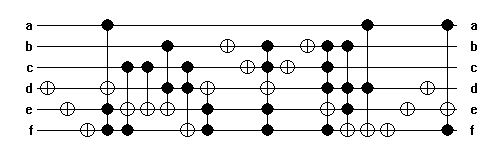

This circuit was synthesized (and simplified,
as a part of synthesis process) by hands based on the following initially
irreversible specification:
000000 -> 000000
000001 -> 000001
000010 -> 000010
000011 -> 000011
000100 -> 000100
001000 -> 001001
001001 -> 001010
001010 -> 001011
001011 -> 001100
001100 -> 001000
010000 -> 010010
010001 -> 010011
010010 -> 010100
010011 -> 010000
010100 -> 010001
011000 -> 011011
011001 -> 011100
011010 -> 011000
011011 -> 011001
011100 -> 011010
100000 -> 100100
100001 -> 100000
100010 -> 100001
100011 -> 100010
100100 -> 100011